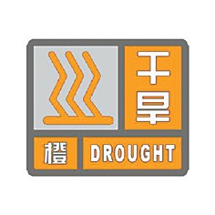

干旱预警信号分二级，分别以橙色、红色表示。干旱指标等级划分，以国家标准《气象干旱等级》（GB/T20481-2006）中的综合气象干旱指数为标准。
（一）干旱橙色预警信号

标准：预计未来一周综合气象干旱指数达到重旱（气象干旱为25~50年一遇），或者某一县（区）有40%以上的农作物受旱。
防御指南：1.有关部门和单位按照职责做好防御干旱的应急工作；2.有关部门启用应急备用水源，调度辖区内一切可用水源，优先保障城乡居民生活用水和牲畜饮水；3.压减城镇供水指标，优先经济作物灌溉用水，限制大量农业灌溉用水；4.限制非生产性高耗水及服务业用水，限制排放工业污水；5.气象部门适时进行人工增雨作业。
（二）干旱红色预警信号
标准：预计未来一周综合气象干旱指数达到特旱（气象干旱为50年以上一遇），或者某一县（区）有60%以上的农作物受旱。
防御指南：1.有关部门和单位按照职责做好防御干旱的应急和救灾工作；2.各级政府和有关部门启动远距离调水等应急供水方案，采取提外水、打深井、车载送水等多种手段，确保城乡居民生活和牲畜饮水；3.限时或者限量供应城镇居民生活用水，缩小或者阶段性停止农业灌溉供水；4.严禁非生产性高耗水及服务业用水，暂停排放工业污水；5.气象部门适时加大人工增雨作业力度。